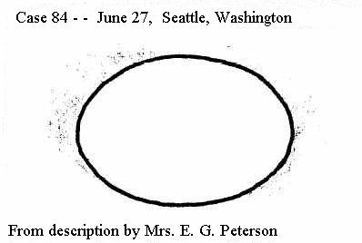
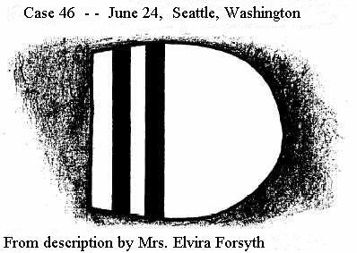

Signalements d'objets satellites
Case 20: June 21, Spokane, Washington
While watching a plane fly over at 11:55 a.m. PST, Guy R. Overman, of Spokane, said his attention was attracted to
several flashing objects in the southern sky, ahead of and below the plane. The flashes came from one silvery object
which appeared as a more or less distinct line, or slim body
, moving on a course to the south, or a little
west of south. This object appeared quite large, and did not seem to be traveling as fast as the plane. Above this
object and apparently at the same, or possibly higher, altitude as the plane, were two more smaller, less distinct
objects, also moving in the same direction. These smaller objects, like the larger one, were silver in color and
were also flashing
. The plane soon outdistanced all three objects, which disappeared after several minutes to
the south. The sighting is among those in the Air Force files and is explained as balloons
.
Case 45: June 24, Portland, Oregon
William Kamp, of 5115 N.E. 22nd Avenue, a retired gas company employee, reported having seen a strange sight in the
sky across the street from his home as he stepped out of the house at 9:00 p.m. PST. He saw a large object which
looked big enough to be a plane
flying in a northwesterly direction.
Just as he noticed the object, he saw a reddishwhite flare-like object being discharged; this bright object
dropped straight down. Another similar object was discharged before the larger object disappeared from view in the
distance. Kamp said the object was flying too high and was too large for a Fourth of July rocket
.
Case 126: June 30, Norwood, Ohio:
Mrs. H. W. Stockwell, of 4000 Floral Avenue, reported that on the night of the 30th she saw a group of seven
disc-like objects in the sky over Norwood. One of the discs, she said, was much larger than the rest and she
estimated its size to be at least a mile in diameter
. She did not mention the sighting until a week later
because she said she felt a little silly about it. Now I think that if they are dangerous, everybody should know
about them
.
Case 454: July 6, Tucson, Arizona
The first in a series of satellite object sightings that occurred in a little more than 24 hours, and moved
progressively around the perimeter of the continental United States in a clockwise pattern, took place at Tucson at
5:00 p.m. MST. Three disc-shaped objects -- one larger than the other two -- were seen by a retired lawyer, Joseph
Hendron, and his wife as they sat outside their home at 521 North Warren Avenue.
At about five p.m., my wife and I were sitting on the patio watching the cloud formations. I suddenly saw what
first appeared to be a kite
, the lawyer reported. We then saw two more. They were coming from the east, in
the direction of Davis Monthan Field, and went north. They appeared very high, and two appeared smaller than the
other. In fact the two small ones seemed to gravitate back and forth from the larger one
.
Mr. Hendron said the larger of the three objects seemed to be flying in a straight course, while the small ones
moved up and down and in and out from the larger one
. He described their color as silver, much the same
effect as the sun would reflect from aluminum
. Hendron asserted that after the objects had disappeared he
speculated as to whether or not they might have been sent up by the weather bureau for testing the atmosphere
.
He said they did not appear to be going, very fast, but that might be because of the height. They might have been
flying high or low, I couldn't estimate, not knowing their size
.
Dr. McDonald was unable to locate the Hendrons, but he did interview another witness to a sighting describing
several objects shortly before the Hendrons reported seeing theirs.
Walter Laos (Case 453) had been sitting in his backyard at 723 East 1st Street at 4:30 p.m. when he saw a
group of from four to six round objects to the northeast, over the Catalina Mountains. (The news account in the
Tucson Arizona Daily Citizen reports the number of objects as two.) Laos told McDonald that the objects
seemed to be flying near what looked like an ordinary cloud. They were moving northeast at a very high speed and at
one point made a sudden descent toward the ground and swooped back up, disappearing aloft.
They were dark in color, he told McDonald, but must have been shiny because they occasionally glinted. He called
his family out, but by the time they got there the objects had disappeared. They had been in view for no more than
15 seconds. The news account quoted Laos as having estimated the objects' height at 5,000 to 6,000 feet, their speed
at 200 miles an hour, and their size at about five to six feet. In that account he described their color as white
aluminum. The account confirms their northeasterly heading, as described to McDonald. Although the direction is the
same as that described by the Hendrons, the number of objects and exact time differ, so it cannot be said with
certainty that the two reports were of the same phenomenon.
Case 528 -- July 6, near Palmdale, California: Mrs. Amy Herdliska, housewife living at Four Points in the
Palmdale area, reported that she had seen a group of objects twice during the late evening behaving in a most
peculiar manner. She reported to Sgt. W. K. Campbell, of the Lancaster County sheriff's substation that at 10:36
p.m., over the mountains south of Palmdale, I saw what looked like a mama disc, with three to five little baby
discs flying around her
.
The little ones would cavort around for awhile, then they'd fly back and seem to fly into the mama disc's pouch.
Anyway, the mama disc absorbed the baby discs
, she explained. Mrs. Herdliska said that the objects were
luminescent and clearly visible
, and before they had disappeared to the south over the mountains, they were seen
separating
again. She reported that a second flight of the same puzzling objects was made again at 11:17 p.m.
(Case 530).
Sgt. Campbell and other deputies made a routine check and said they saw fleets of mackerel-like clouds 15,000
to 20,000 feet in the air
. They did not see any of the discs reported by Mrs. Herdliska, and they wrote off the
report by explaining that she may have seen reflections of Hollywood arc lights
on the clouds.
The Los Angeles Herald-Express and the Examiner (both on 7/8) briefly refer to a sighting in North
Hollywood at approximately the same time between ten and eleven p.m. Mrs. William A. Becker, of 6240 Sunset Avenue,
reported that she had watched six or eight
discs for an hour from her home. They were darting back and
forth, crisscrossing the sky very high
, she said. They looked all of ten or twelve feet in width - I
finally got tired of looking at them and went to bed
. There is no indication that Mrs. Becker had seen the
same kind of phenomenon as Mrs. Herdliska reported, but if Mrs. Herdliska's mama disc and baby discs
disappeared to the south in the interval between her two sightings, North Hollywood is where they would be seen.
Case 556: July 7, Tacoma, Washington:
A little more than three hours after Mrs. Herdliska had seen the second flight of mama and baby discs, a similar
sighting was made by two Tacoma policemen. At 2:30 a,m. PST, prowl car officers Evan Davies and Stan Johnson were
parked at North 33rd and Adams Streets with their headlights and motor turned off. Davies' attention was caught by a
streak
in the sky; looking more closely, he saw a strange spectacle. I didn't say anything
, he
reported later. Then I noticed Stan was watching it too
.
Do you see anything?
Johnson asked.
Yeah, do you?
Davies answered cautiously.
I thought I was crazy
, Johnson remarked with relief. I've been watching it for five minutes
.
So have I
, his partner admitted.
The cause for this guarded exchange was the sight of a group of six or seven disc-like objects seen just below a
bright moon in the southern sky. One central object, larger than the others, seemed to act as a sort of
flagship
. The smaller objects would make repeated movements toward the large disc and then glide away to the
south. The officers said the larger disc appeared to be spinning like a top, and throwing off sparks like a
bursting sky rocket
, and then attracting the tiny objects back like a mother hen with her chicks
.
The officers estimated that the objects were at an altitude of about 10,000 feet. The smaller and more distinct
objects
began to move westward in a loose group, and vanished from view, while the large disc remained for a
brief time in one spot, and then it too began to move westward. The men decided to give chase, and Davies radioed
the police dispatcher, D. F. Erickson, Car No. 5, Johnson and Davies to KGZN. We're chasing a flying saucer
towards the Narrows Bridge site
.
As they sped westward, the officers radioed their course and a running description of the phenomenon. Johnson said
that although it was impossible to judge altitude, size, speed or distance accurately, the large disc appeared to
move at tremendous speed and was the apparent size of a softball
. One of the smaller discs was seen flying
over South Tacoma; later, another was seen to the west, over Hood Canal; a third, which flew out of sight in less
than a minute, appeared over Commencement Bay. At one point, the large object made a rapid ascent of an estimated
5,000 feet above its former altitude at extremely high speed, quicker than you could snap your fingers
,
according to Davies. He said that the parent disc seemed a shade of red part of the time, particularly when it
zoomed upward, but most of the time it was a sort of luminous silver
(AP quoted him as saying its color turned
from brilliant red to purple to blue-white and back to red
).
The officers finally lost sight of the object over the western horizon. In all, they had observed the phenomenon
for a half an hour. At the police station, officers said an unnamed caller from South Tacoma had phoned in exactly
at the same time to report seeing the same spectacle, and M. C. Streans, of 913 South L, reported he had watched the
same phenomenon sometime after 2:00 a.m.
Dr. McDonald interviewed Evan Davies, who is still with the Tacoma police force, on two consecutive days by phone.
Davies recalled that the night of the sighting was very clear. He and Stan Johnson were parked in Car D-3 near the
Tacoma Narrows Bridge, facing west, when they first saw the objects. Davies compared the motion of the smaller ones
to sparks that shot out away from the main object but then would come back to it
like a sparkler, except
for their reentry
. He put their altitude roughly at 10,000 feet.
Davies told McDonald that the most striking feature of the entire sighting was the way the objects would suddenly
jump from one location to another spot miles away
. At one point they had shot up suddenly through a
substantial vertical distance. About mid-point during the sighting the objects began moving south, then west, and
they eventually disappeared in the direction of the ocean. Both Davies and Johnson agreed that these objects could
not have been any conventional aircraft.
Davies added that there was another patrol car which had been alerted and he said that the officers in that car
had also seen the objects. The name of one of the men he recalled as George Hager, no longer with the Tacoma police
force but still living in Tacoma. Between Dr. McDonald's first and second interviews with Davies, the latter had
talked with Stan Johnson about the sighting, and Johnson vividly recalled the way the objects jumped over
considerable distances.
Case 597: July 7, Cicero, Illinois:
At some unspecified time during the day, Richard Allen, 19, of 2935 South 29th, saw a formation consisting of one
large disc, about the size of a blimp and silver in color, with three or four smaller discs following it in a
straight line. The objects were seen flying over 29th and Laramie.
Case 660: July 7, Manchester, Maine:
A report of an illuminated galaxy of flying discs
seen by three members of a family during the evening was
made. The objects were seen first by Charles Crockett, 15, as he was walking toward his home on the highway between
Manchester Four Corners and the Augusta Country Club, at 9:30 p.m. EDT. The cluster of luminous objects was seen to
the west, over the north end of Lake Cobbosseecontee. They were still there when he arrived home a few minutes
later, so he summoned his mother, Mrs. Doris Crockett, and his grandmother, Mrs. Abbie Hallowell, who confirmed his
observation.
Mrs. Crockett said that the lighted objects appeared to be just above the treetops at the north end of the lake.
She described one circular, stationary light that looked something the way the moon does breaking through a
cloud
. Bright flashing lights that appeared and disappeared were seen revolving around the stationary object.
Mrs. Crockett said these lights resembled the quickly cast beams of a flashlight
. The central spot of light
gradually faded, she reported, and then the whirling spots of light also disappeared.
Charles described what he saw as about eight or ten smaller discs revolving around a big disc-shaped spot of
light
. The objects remained in view for fifteen minutes before they faded out of sight.
Spectators at an out-of-door boxing match in Winthrop, a few miles to the west, saw lights of a similar
description at about the same time, but they were said to have been reflections of searchlights on clouds (Case
659). There may also be some connection with the sighting made near Rome, Maine, a short time before the Manchester
appearance (II-10).
One other report that qualifies as a satellite object case is the sighting made earlier in the spring of 1947 by
Mrs. H. G. Olavick and Mrs. William Down, at Tucson, Arizona, and reported directly to Dr. McDonald by one of the
witnesses. Details of this report are included in the Introduction.

